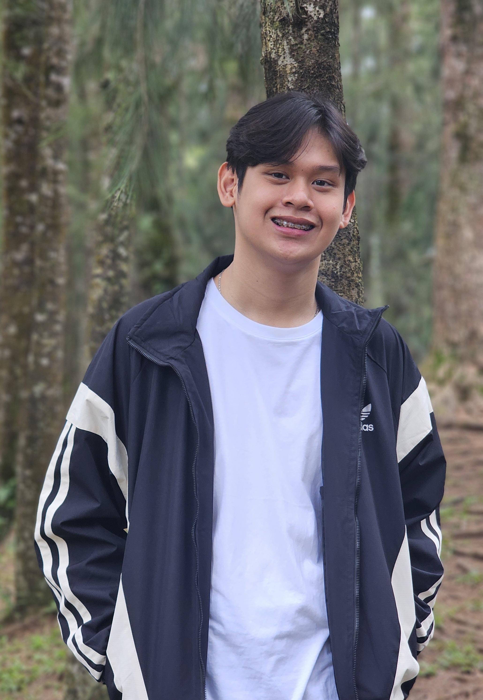

Hello! I'm Joshua Daniel Reyes, a BS Information Technology student from Philippine Christian University - Dasmariñas. Welcome to my personal slam note! Here's a little something about me.

Name: Joshua Daniel S. Reyes
Nickname: JD
Course: Bachelor of Science in Information Technology
School: Philippine Christian University - Dasmariñas
Personality: I'm naturally introverted, but I become very expressive when I'm comfortable, especially when I'm working on something I'm passionate about.
Interests: Technology, digital creativity, social impact, events, and creating projects that can help other people.
Hobbies: Creating digital content, exploring technology, designing, organizing projects, and working on creative ideas.
Career Goal: I want to build a career where I can combine technology, creativity, leadership, and communication.
Advocacy: I believe that young people can use their skills and creativity to create meaningful change in their communities.
Personal Quote: "Be the light, be the future."
One of the things I enjoy most is turning ideas into actual projects. Whether it is a technology project, an event, or a community initiative, I enjoy planning, creating, and seeing an idea come to life.
I also enjoy working with people and taking leadership roles. Through different experiences, I have learned that leadership is not only about being in charge, but also about listening, helping others, and making things happen.
I am still learning and discovering what I want to do in the future, but I know that I want my work to have a purpose and create a positive impact.
Best Friend's Name: My closest friends
What I Value in Friendship: I value people who are genuine, supportive, trustworthy, and willing to stay through both the good and difficult moments.
Best Memories: Some of my favorite memories are the simple moments spent with friends, from random conversations and jokes to working together on school activities and projects.
Message to My Friends: Thank you for being part of my journey. Whether we have known each other for years or only recently became friends, I appreciate every memory and experience we have shared.
Life is a continuous learning experience. I may not always know exactly where I am going, but I believe that every experience, challenge, and opportunity helps shape the person I am becoming.
I want to continue learning, creating, and helping others along the way. I hope that someday, the things I create will not only be successful, but will also make a difference.
To anyone reading this: believe in yourself, keep learning, and don't be afraid to start something new. Even small ideas can become something meaningful when you are willing to work for them.
Thank you for taking the time to get to know me!
Joshua Daniel Reyes
BS Information Technology
Philippine Christian University - Dasmariñas